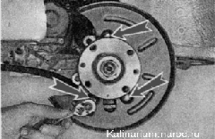

Снятие
1. Снимаем тормозной диск (см. выше, «Тормозной диск — снятие и установка»).
2. Торцовым ключом на 10 мм отворачиваем три болта крепления грязезащитного кожуха.

3. Снимаем грязезащитный кожух с поворотного кулака.
Установка
Устанавливаем все снятые детали в обратной последовательности.